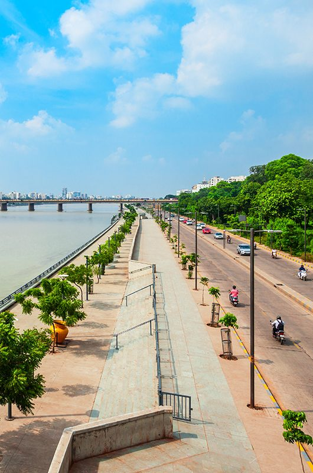
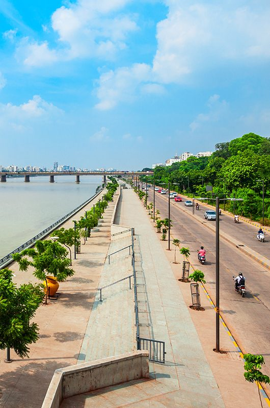
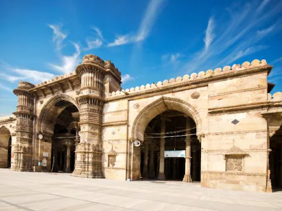
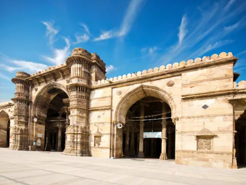
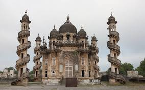
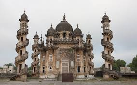

Sabarmati Ashram
Gandhi’s home and a peaceful riverside museum.
Ahmedabad is a blend of old-world charm and modern city life. Its UNESCO-listed old city features narrow lanes, wooden havelis and historic mosques. Sabarmati Ashram adds deep cultural significance.
The Sabarmati Riverfront is a relaxing walkway, while local eateries serve famous Gujarati snacks like fafda, jalebi, khaman and undhiyu. The city makes a perfect stop before visiting Rann of Kutch.
Gandhi’s home and a peaceful riverside museum.
Historic neighbourhoods with wooden havelis and Jain temples.
Walking paths, gardens and cycling tracks along the river.
Famous stone latticework window, a city symbol.
Learn about Gandhi’s life and walk along the peaceful riverbank.
Narrow lanes with havelis, bird feeders and heritage architecture.
Relaxing walkway, boat rides and city skyline views at sunset.
Short and cultural.
Quick trip
Relaxed
3–4 days
Centrally located with river access and easy transport.
Good for families and short stays.
Shopping areas with cafes and modern hotels.
Best balance of comfort and access.
Stay inside restored traditional homes for cultural immersion.
Great for heritage enthusiasts.
 

 

 

Food, timing and navigation.